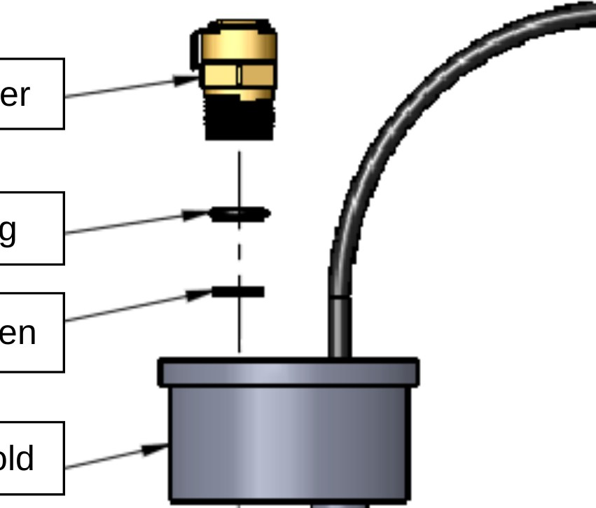
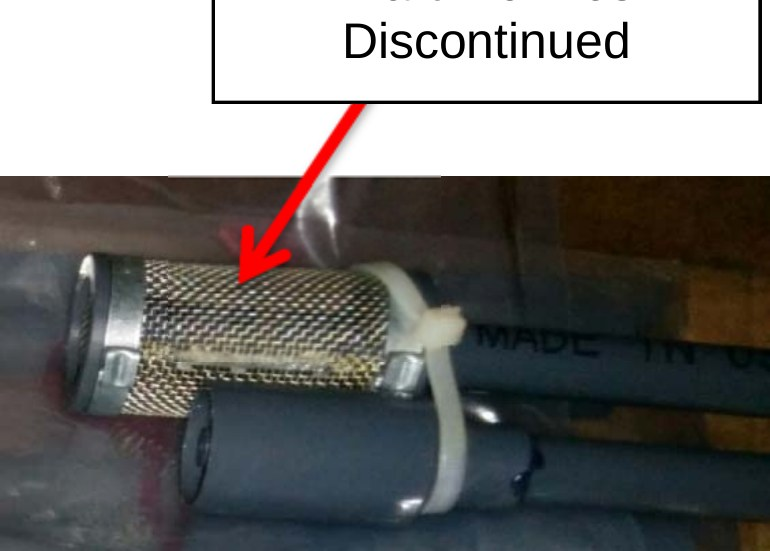

Doc no. MOC-TSB-15-01 // Vol. 15 No. 01 // Jan 20, 2015 // Cooling
Filter for the New Fluid Pick-up Tubes Used on all ATF and Coolant Machines
New9823394263
MOC has created a new filter (Part No. 98233) for use in all ATF and Coolant Machines. This filter will replace the old filter (Part No. 94263), which has been discontinued. The new filter is installed inside the manifold, under the quick disconnect coupler.
What's new
Contact
For more information, contact the Machine & Equipment Department at 866.244.6621.


Part numbers
| Part No. | Description | Notes |
|---|---|---|
| 98233 | Coupler O-ring Manifold Pick-up Tube Screen Filter Kit | |
| 94263 | Old filter |